포슬포슬 밤호박
강원도 홍천에서 키운
포슬포슬 달콤한 단호박
강원도 홍천의 깨끗한 자연에서 자라
포슬포슬 밤처럼 고소한
유기농 밤호박
단호박이라고 해서 모두 같은 단호박은 아닙니다.
오토끼마켓의 단호박은 밤호박 계열의 단호박으로,
질척이지 않는 적당한 수분감과 포슬포슬한 식감,
씹을수록 느껴지는 고소함과 자연스러운 단맛이 특징입니다.
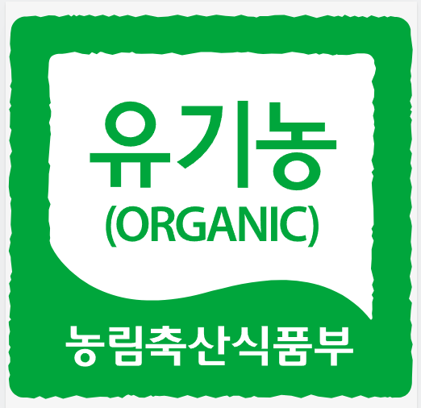
유기농 재배인증기준에 맞춰 건강하게단호박이라고 다 같은 단호박이 아닙니다.
밤처럼 포슬하고
고소하게 달콤한 밤호박
오토끼마켓 단호박은 일반적인 단호박과는 다른 밤호박 계열입니다.
수분이 지나치게 많아 질척이는 식감보다는 적당한 수분감과 포슬포슬한 육질을 가지고 있어
입안에서는 마치 밤을 먹는 듯 고소하게 부서집니다.
잘 익은 속살에서는 단호박 본연의 은은한 단맛까지 느낄 수 있어
그대로 쪄 먹어도 맛있고, 샐러드·수프·이유식·베이킹 등 다양한 요리에 잘 어울립니다.
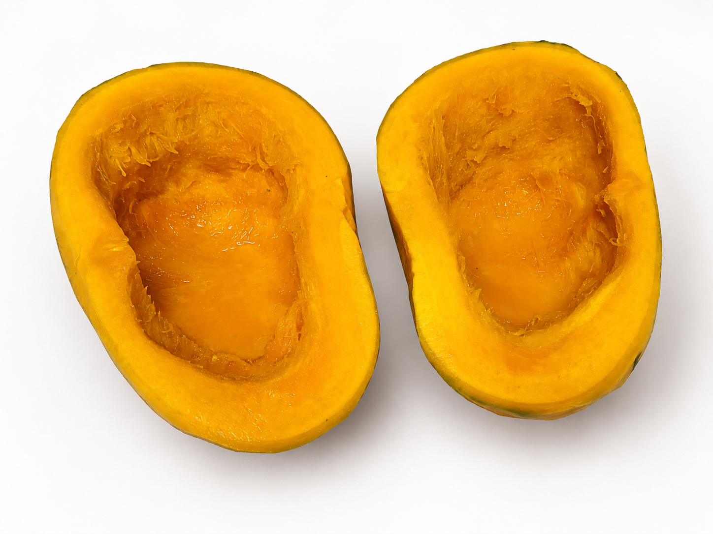
밤호박 맛의 포인트
밤호박과 일반 단호박 비교
| 구분 | 오토끼 유기농 밤호박 | 일반 단호박 |
|---|---|---|
| 계열 | 밤호박 계열 | 품종별 상이 |
| 식감 | 포슬포슬하고 부드러움 | 촉촉하거나 부드러운 편 |
| 수분감 | 과하지 않은 적당한 수분감 | 품종에 따라 수분감 차이 |
| 맛 | 고소하고 자연스러운 단맛 | 품종에 따라 차이 |
| 활용 | 찜·샐러드·이유식·수프·베이킹 | 다양한 요리에 활용 |
| 재배 | 유기농 재배 | 재배 방식별 상이 |
| 산지 | 강원도 홍천 | 산지별 상이 |
화학비료 대신
자연에 가까운 방법으로 키웁니다.
오토끼마켓 밤호박은 유기농 인증기준에 맞춰 재배한 국내산 단호박입니다.
화학비료 대신 퇴비와 유기농 인증기준에 맞는 유기질 자재 등을 활용해
토양과 작물의 영양을 관리합니다.
병충해 관리 또한 일반 합성농약에 의존하기보다 재배 환경을 관리하고
사용할 수 있는 유기농업자재 등을 활용하며 농가에서 정성스럽게 키워냅니다.
눈으로 확인하는
2026년 유기농 인증서
제공받은 인증서 원본의 1페이지를
내용이 잘리지 않도록 그대로 담았습니다.
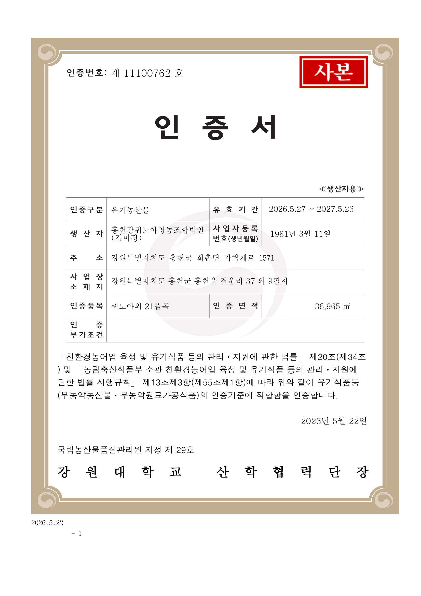
유기농 인증서 1페이지 사본 · 인증 세부사항은 위 인증서 원문을 기준으로 확인해 주세요.
충분히 기다려 더 맛있게
알맞은 후숙으로 채운
자연스러운 단맛
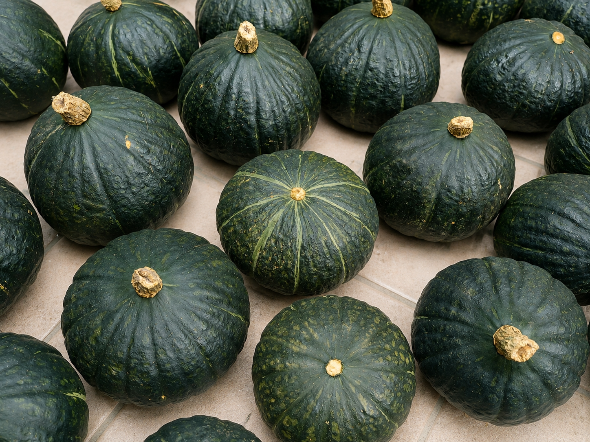
수확했다고 바로 가장 맛있는 것은 아닙니다.
단호박은 수확 후 알맞은 후숙 과정을 거치면서 속살의 맛과 식감이 한층 안정되고
단호박 본연의 자연스러운 단맛을 느끼기 좋아집니다.
오토끼마켓에서는 알맞은 후숙 과정을 거친 밤호박을 선별해 보내드립니다.
잘 익은 노란 속살과 포슬포슬한 식감, 고소한 풍미까지 즐겨보세요.
청정 강원도 홍천에서
직접 키우고 수확합니다.
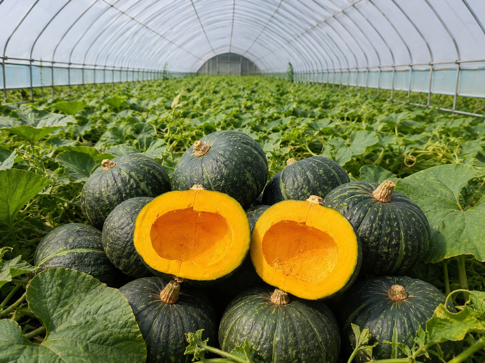
깨끗한 자연환경을 가진 강원도 홍천의 농가에서 직접 재배하고 수확한 국내산 밤호박입니다.
농가에서 정성스럽게 키운 단호박을 수확하고 상품 상태를 확인한 뒤
꼼꼼하게 선별하여 고객님의 식탁까지 보내드립니다.
맛있게 즐기는 가장 간단한 방법
포슬포슬 밤호박 찌기
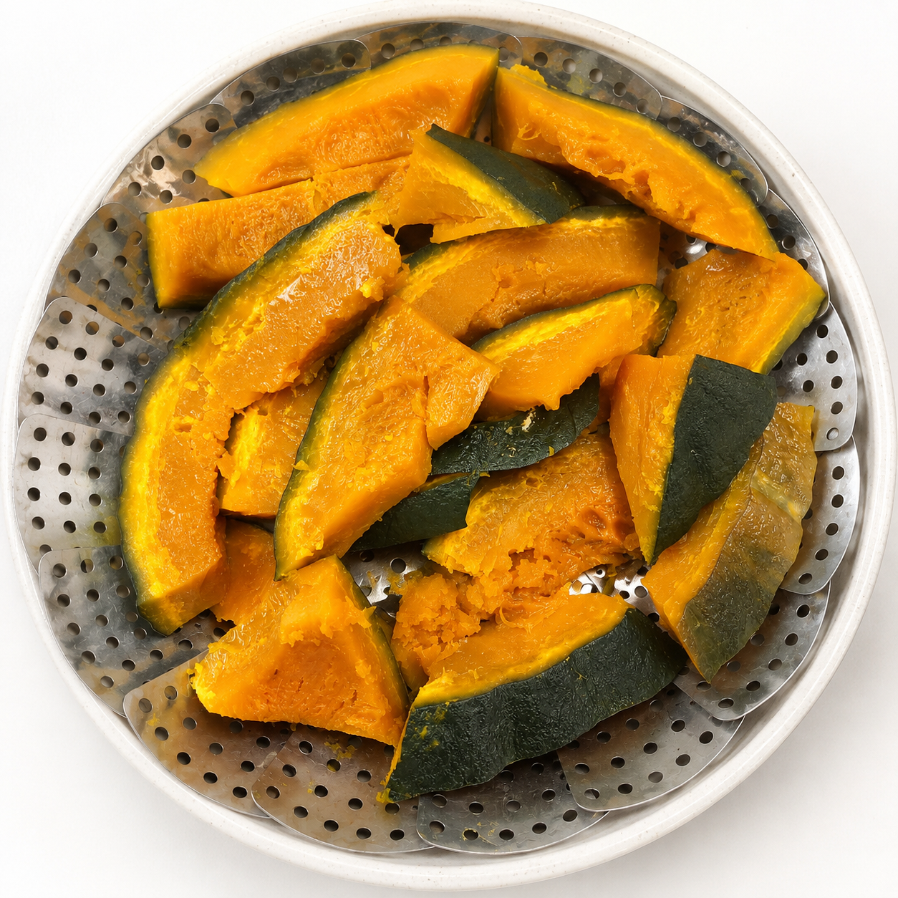
깨끗하게 씻기
단호박을 흐르는 물에 깨끗하게 씻어주세요.
먹기 좋게 손질하기
먹기 좋은 크기로 자른 뒤 안쪽의 씨와 섬유질을 제거해주세요.
약 20분 충분히 찌기
찜기에 단호박을 올려 약 20분 정도 충분히 쪄주세요.
부드럽게 익으면 완성
젓가락이 부드럽게 들어갈 정도로 익으면 본연의 맛을 즐겨보세요.
※ 크기와 조리 환경에 따라 조리시간은 달라질 수 있습니다.
이렇게 활용해 보세요
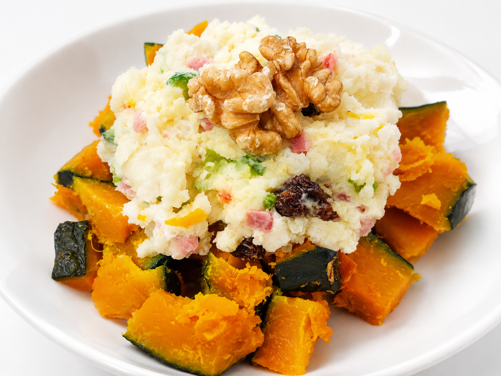
단호박 샐러드
포슬하게 익힌 단호박을 으깨 견과류나 채소와 함께 든든한 한 끼로
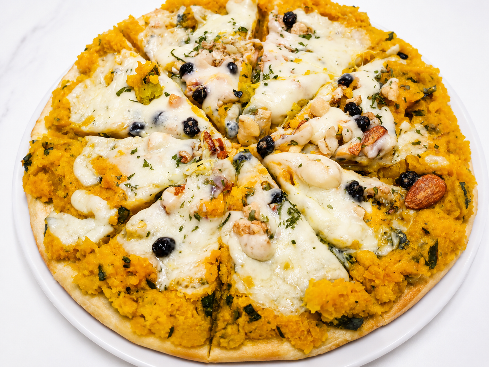
단호박 피자
부드럽게 익힌 단호박을 토핑으로 올려 아이들과 즐기는 달콤한 간식으로
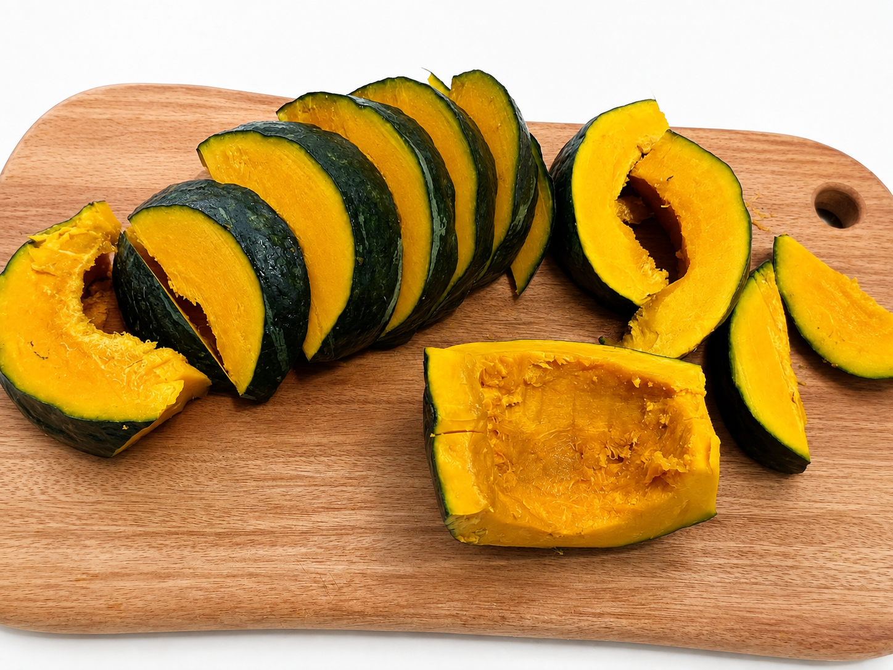
단호박 이유식
충분히 익힌 후 곱게 으깨 단계에 맞는 다양한 이유식 재료와 함께
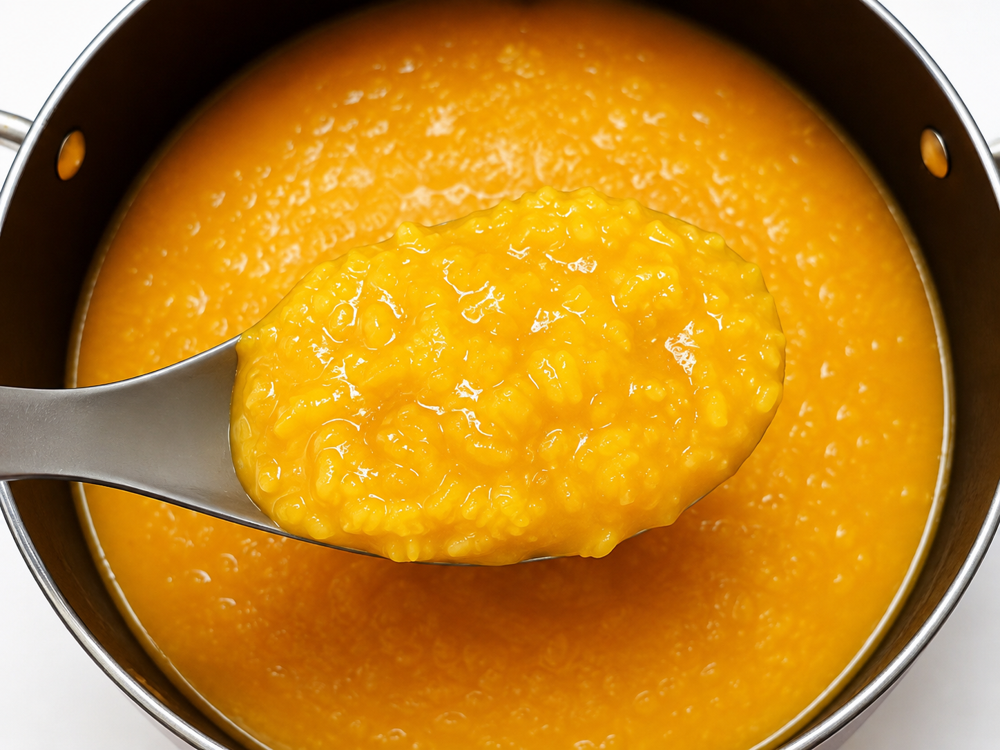
단호박 수프
부드럽게 갈아 따뜻하고 고소한 수프로 즐겨보세요.
상품 보관 안내
통째로 보관할 경우
직사광선을 피해 서늘하고 통풍이 잘되는 곳에 보관해주세요.
습기가 많은 곳이나 밀폐된 공간은 피하고, 꼭지가 있는 부분이 눌리지 않도록 보관하는 것이 좋습니다.
자른 후 보관할 경우
안쪽의 씨와 섬유질을 깨끗하게 제거한 후 냉장보관해주세요.
잘린 단면은 랩이나 밀폐용기로 공기 접촉을 줄이고, 가능한 빠른 시일 내에 드세요.
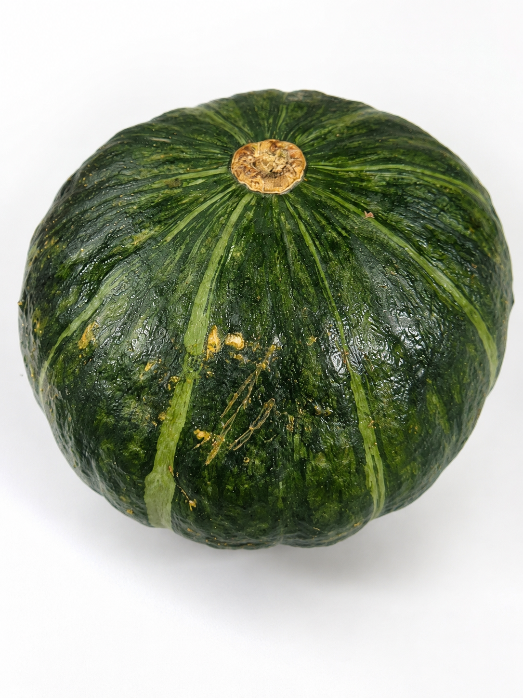
꼭 확인해주세요
겉면에 흙이나 흔적이 있을 수 있어요.
유기농 농산물 특성상 겉면에 흙이나 자연스러운 이물질, 표면의 흠집이나 얼룩이 남아 있을 수 있습니다. 이는 자연스러운 현상으로 깨끗하게 세척한 뒤 드시면 됩니다.
겉모양이 조금 투박하더라도 속살과 맛에는 문제가 없는 상품을 선별하여 보내드립니다. 다만 자른 안쪽에 부패나 상품 이상이 확인되는 경우 사진과 함께 오토끼마켓 카카오톡 채널로 문의해주세요.
자주 묻는 질문
Q. 단호박이 생각보다 단단한데 정상인가요?
네. 밤호박은 포슬한 육질을 가진 품종 특성상 생과 상태에서는 단단하게 느껴질 수 있습니다. 충분히 쪄서 익혀주시면 부드럽고 포슬한 식감을 즐길 수 있습니다.
Q. 모든 단호박의 크기가 똑같나요?
아닙니다. 자연에서 자라는 농산물 특성상 크기와 모양, 무게에는 차이가 있을 수 있습니다. 옵션별 총 중량을 기준으로 구성합니다.
Q. 표면에 흙이나 얼룩이 있어요.
유기농 재배 농산물 특성상 표면에 흙이나 자연스러운 얼룩이 남아 있을 수 있습니다. 깨끗하게 세척한 뒤 드셔주세요.
Q. 단호박을 받으면 바로 먹어도 되나요?
네. 알맞은 후숙 과정을 거친 상품을 보내드리므로 수령 후 세척하고 충분히 익혀 바로 즐기실 수 있습니다.
Q. 잘라놓은 단호박은 어떻게 보관하나요?
씨와 섬유질을 제거한 후 단면이 마르지 않도록 밀폐하여 냉장보관해주세요.
안내 및 주의사항
- 농산물 특성상 크기, 모양, 색상에는 개체별 차이가 있습니다.
- 자연스럽게 생긴 표면 흠집이나 얼룩이 있을 수 있습니다.
- 중량 기준 상품으로 개별 크기에 따라 과수는 달라질 수 있습니다.
- 수령 후 상품 상태를 확인해주세요.
- 문제가 있는 경우 상품을 버리기 전에 사진을 촬영하여 고객센터로 문의해주세요.
- 단호박은 단단한 농산물이므로 손질 시 칼 사용에 주의해주세요.
상품정보
- 상품명
- 유기농 밤호박(단호박)
- 품목
- 밤호박 계열 단호박
- 원산지
- 국내산 / 강원도 홍천
- 재배방식
- 유기농
- 구성
- 2kg / 4kg / 5kg / 6kg · 옵션별 구성 상이
- 보관방법
- 통과는 서늘하고 통풍이 잘되는 곳에 보관
절단 후 씨를 제거하여 냉장보관 - 섭취방법
- 충분히 가열하여 섭취
- 포장 및 배송
- 산지에서 선별 후 포장하여 출고
※ 세부 상품정보 및 인증정보는 실제 판매 상품의 표시사항을 기준으로 최종 기재해주세요.